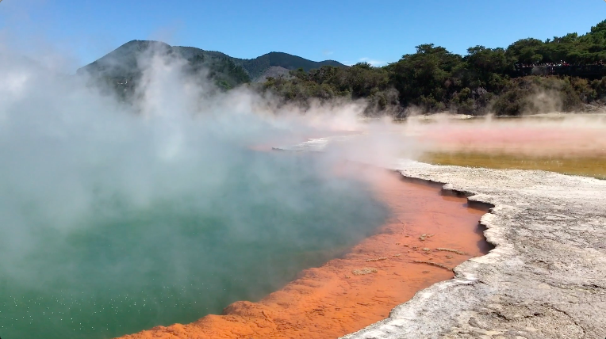
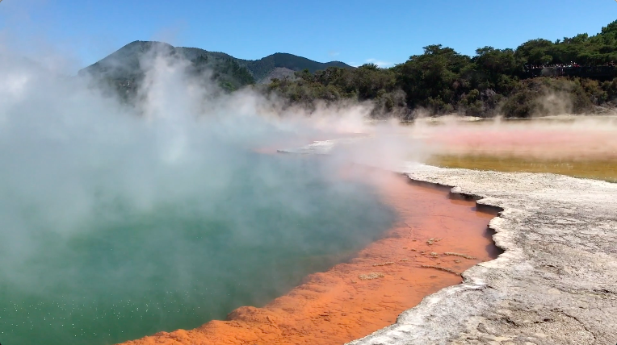
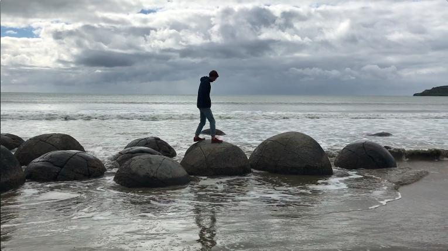
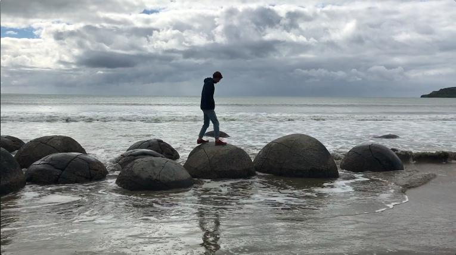

Travelling the World
Short film about Georgies and my trip to Myanmar, Singapore, Australia and New Zealand; showcasing all of the amazing sites and places we had the privilege to see along the way.
Created - May 2018

 

 
